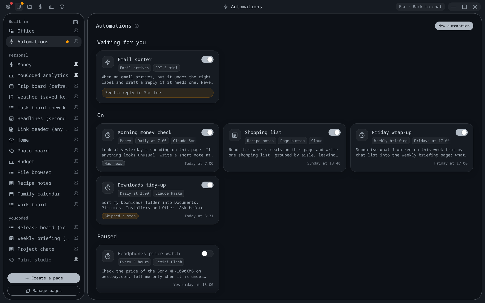
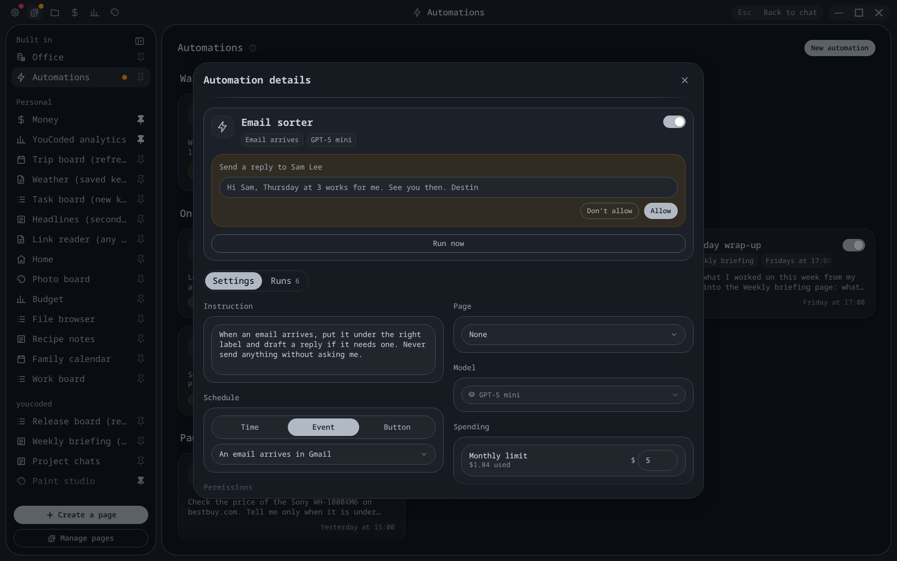
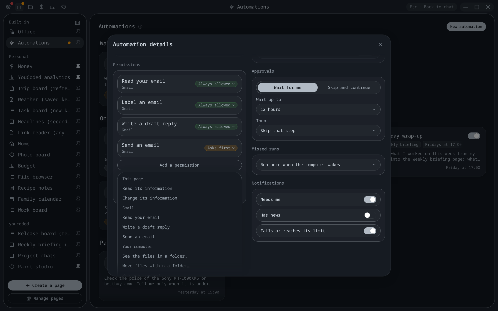
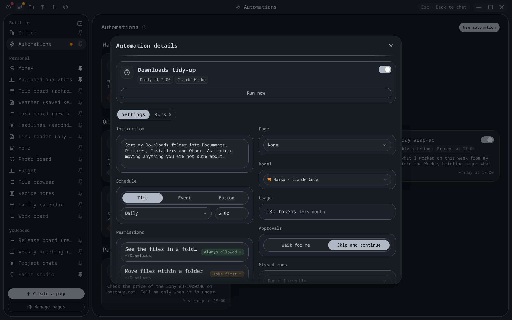
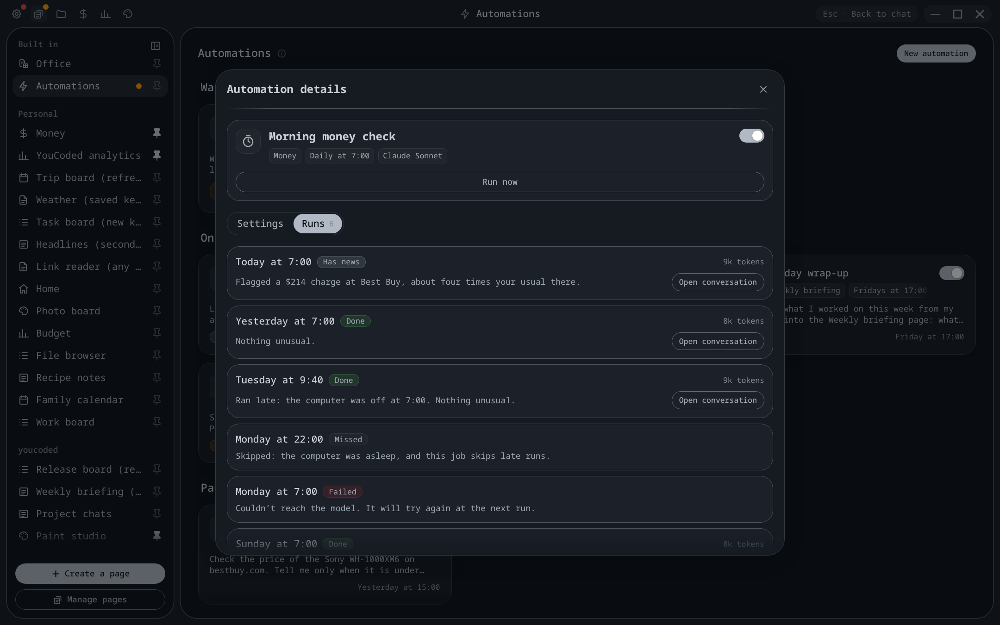
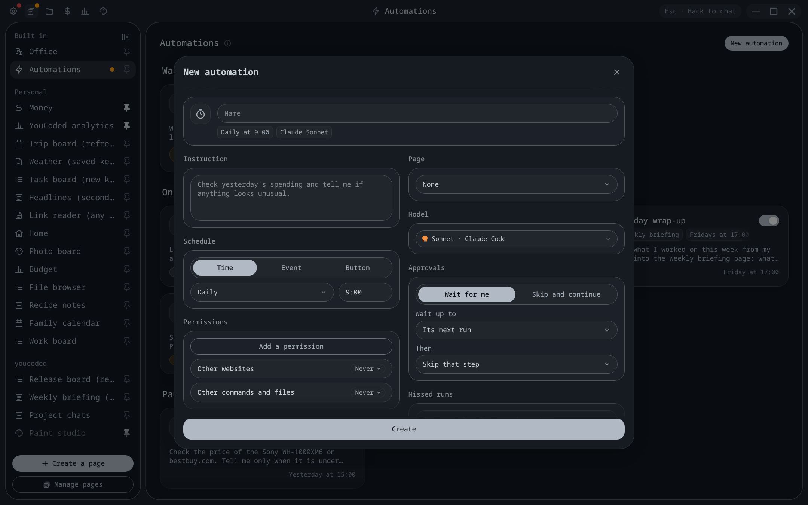
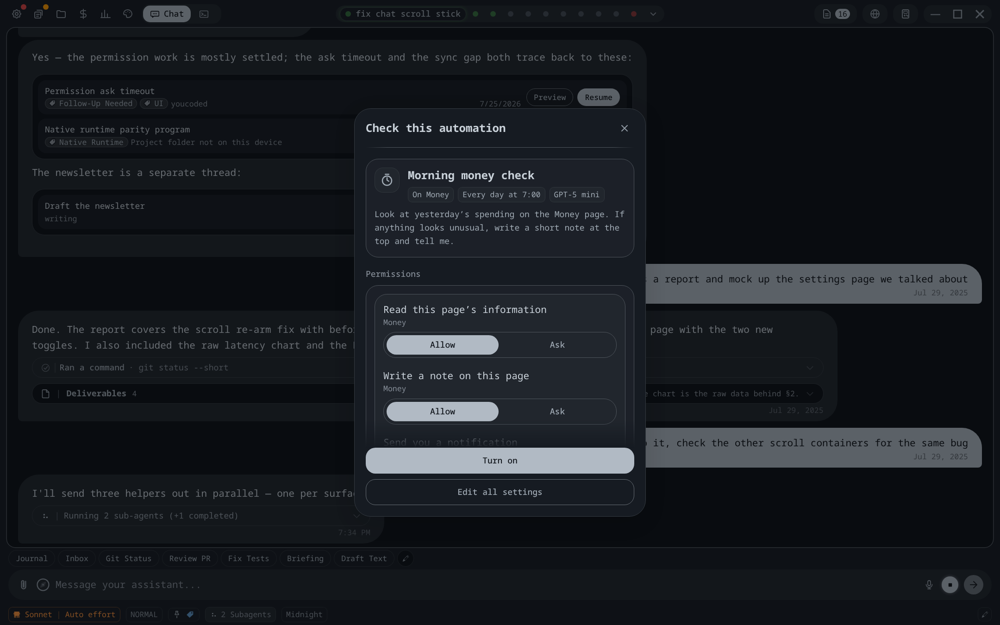
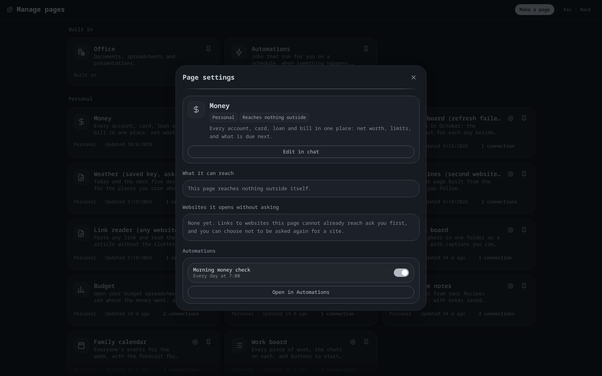

Automations: what we're building
Pages, step 4. The screens you approved, the pieces behind them, and how each piece gets checked. At the end of the build this same page comes back with a pass or fail on every check.
1. The pieces and how they connect
Eight pieces. Arrows show what talks to what. Everything runs inside YouCoded on this computer, and on a phone inside the YouCoded app.
1Automations page
The built-in page you approved: cards grouped Waiting for you / On / Paused, the details popup, the Runs tab. Shows only what the job list says; never starts a run itself except through Run now and Allow.
Never shows a run as a chat.
2Pages and chats
A page can start one of its own jobs from a button, or report that something happened ("a new expense was added"). In a chat, asking to automate something opens the short check popup; nothing is saved until Turn on.
Never lets a page start another page's jobs, or a job that stands alone.
3Notifications
A system notification when a job needs you, has news, or failed, each switchable per job. Clicking it opens that job.
Never for "done, nothing to report".
4Job list
One file of every job's settings, plus a folder per job holding its runs. Each run keeps a short summary and its full conversation. Older than the last 50 are deleted as new ones arrive. Usage is kept per job, per month, per model.
Never synced between devices in this version.
5The runner
Starts a run, picks the route for the job's model, hands it the job's permissions, and records the outcome. A run waiting for your OK is held here, on disk, so closing the app doesn't lose it.
Never runs one job twice at the same time; a third due job waits its turn.
6The clock
Every 30 seconds it checks which jobs are due. When the computer wakes, or YouCoded opens, it applies each job's Missed runs setting: run once, skip, or run differently. Several missed times become one run.
Never wakes a sleeping computer; jobs run only while YouCoded is open.
7Permission gate
Every action a run tries passes here first. Always allowed goes through; Asks first waits for you or skips, as the job says; anything not listed follows the job's "Other websites" / "Other commands and files" setting. On paid models it adds up spending and stops the run before its next step once the monthly limit is reached.
Never shows a run's question in a chat's permission card; it goes to the job.
8Two routes, one behaviour
Claude jobs run through your Claude subscription with no window and nothing saved to your chat history. ChatGPT and OpenRouter jobs run on YouCoded's own assistant engine. Both go through the same gate, so a job behaves the same whichever model it uses; only the Spending/Usage line differs.
Never runs without the gate: if the Claude route can't apply your permissions, the run fails with a clear reason instead.
2. The screens you approved, and what's behind each control

Automations page
- Switch on a card: turns the job off or on. Off means the clock skips it; a run already going finishes.
- Waiting for you group: jobs holding a run for your OK. The same jobs light the orange dot on the Pages button.
- Result pill and date: the last run's outcome, from the job list.
- New automation: opens the empty details popup.

Automation details
- Allow / Don't allow: answers the waiting run, which carries on or skips that step.
- Run now: starts a run immediately, outside the schedule.
- Every field: saves as you change it. The next run uses the new settings; a run already going keeps the old ones.
- Approvals: wait for you (up to a time you pick, then skip, stop or do something else) or skip and continue.
- Missed runs: what the clock does after the computer was off.

Permissions
- Each pill: Always allowed or Asks first for that one thing; Remove in its menu.
- Add a permission: grouped by where it comes from. Picking a folder, website or command asks which one next, in a small box in the same style (not drawn yet; shown on the deck after the build).
- Other websites / Other commands and files: Never or Asks first for anything not listed.

Model, spending and usage
- Model picker: the same one as Settings. Changing it changes the route; nothing else about the job changes.
- Monthly limit (paid models): starts at $5. Reaching it stops the run before its next step, so it can end a few cents over; the run shows the real amount.
- Usage (subscriptions): no limit; tokens this month, counted per model.

Runs
- Each box: one run: when, result, cost, what it did.
- Open conversation: the run's full conversation, read-only. It never appears among your chats.
- Last 50 kept per job.

New automation
- Create: saves it switched on; the clock picks it up at once.

From a chat
- Asking the assistant to automate something makes it fill in this check. Turn on saves the job; Edit all settings opens the details popup; the ✕ throws the draft away.
- Works in Claude chats and in ChatGPT/OpenRouter chats alike.

A page's Settings
- Lists that page's own jobs with their switches; Open in Automations jumps to the job.
- A page button tied to a job shows a spinner while it runs and a dot while it waits, drawn the same on every page.
3. How it gets checked
Automatic a test the build adds and runs on every change, with no model calls and no money spent (a fake model and a fake clock stand in). You try it a step in the dev window, never your own app. At the end the right column fills in.
| What should be true | How | The check | Result |
|---|---|---|---|
| A job runs at its scheduled time. | Automatic | Fake clock moves to 8:00; the runner starts exactly one run of the 8:00 job. | not built yet |
| Missed runs follow the job's setting. | Automatic | Clock jumps three days: "run once" gives one run, "skip" gives one Missed row, "run differently" gives one run with the extra instruction. | not built yet |
| A paused job never runs. | Automatic | Switch off, move the clock past its time: no run. | not built yet |
| Always allowed goes through; anything set to Never is refused. | Automatic | A fake model tries a listed and an unlisted action on both routes; the gate's answers are compared. | not built yet |
| Asks first + Wait: the run waits, then carries on after Allow. | Automatic | The run stops at the action, the job shows Waiting, Allow resumes it, and the run ends Done. | not built yet |
| No answer in time does what the job says. | Automatic | Clock passes "Wait up to"; one test each for skip that step, stop the run, do something else. | not built yet |
| Asks first + Skip: the run continues without it. | Automatic | The action is refused, the run continues, and the run says what was skipped. | not built yet |
| A waiting run survives closing the app. | Automatic | The runner is shut down mid-wait and started again; the job still waits, and Allow finishes it. | not built yet |
| Spending stops at the limit. | Automatic | A fake model charges 3 cents a step against a 10-cent limit: the run stops after the 4th step, shows "Limit reached" and 12 cents. | not built yet |
| Subscription usage is counted per job and model. | Automatic | Two runs on two models; the month's usage shows both, separately. | not built yet |
| Runs never appear as chats. | Automatic | After a run: the chat list, Resume list, phone list and chat search have nothing new, and no Claude chat file was written. | not built yet |
| Only the last 50 runs are kept. | Automatic | 51 runs: the oldest is gone. | not built yet |
| At most two jobs run at once. | Automatic | Three due at once: two start, the third starts when one ends. | not built yet |
| A page can only start its own jobs. | Automatic | Page A asks to run page B's job: refused. | not built yet |
| Notifications follow each job's switches, and never for plain Done. | Automatic | Each outcome is run with each switch on and off; the notifications sent are compared. | not built yet |
| The screens still match what you approved. | Automatic | Each screen above is re-photographed on the built version and shown to you beside these pictures. | not built yet |
| Phone and computer show the same jobs. | Automatic | The existing check that every computer feature has its phone counterpart, extended to automations. | not built yet |
| A real Claude job runs end to end. | You try it | In the dev window: make "every minute, tell me the time" on Claude, wait a minute, open its run. | not built yet |
| A real OpenRouter job stops at its limit. | You try it | Set a 1-cent limit, Run now, and see "Limit reached" with the real cost. | not built yet |
| A notification arrives and opens the job. | You try it | A job set to ask before writing a file; Run now; click the notification. | not built yet |
| A page button runs its job. | You try it | On the Money page, press its check button: spinner, then the result on the card. | not built yet |
| Automating from a chat. | You try it | In a chat: "every morning, check my spending" → the check popup → Turn on → it appears on the Automations page. | not built yet |
Also run on every change: the app's full test suite, type checks and style rules. Before you see the result, a separate reviewer reads the code and an outside tester who has never seen this plan tries the screens; what they find is listed here with what was done about it.
Not in this version
- Starting a job when something happens elsewhere (an email arrives in Gmail): needs step 5's "Sign in with…". Until then: schedule, page button, or the page reporting something.
- Chains of jobs handing work to each other: waits on the plans work.
- Running while YouCoded is closed, and syncing jobs between devices.